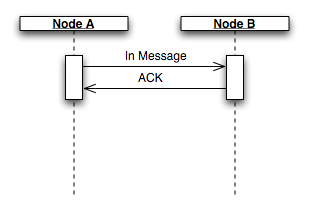
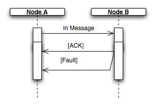
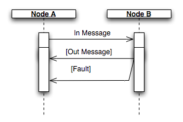
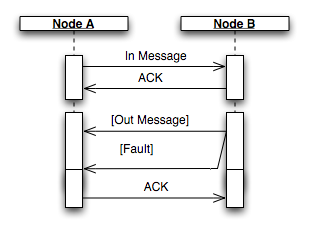

Web Services Addressing 1.0 - Test Message Exchanges
Message Exchanges are an enumerated list of concrete message
exchanges which may be used in conjunction with the test assertions
to group, and reveal the coverage of Web Service Addressing 1.0
test cases.
This version only has HTTP as the underlying protocol and
therefore doesn't expose sceanrios involving a one-way transport,
such as Email.
The list of WSDL 1.1 bindings, WSDL 2.0 MEPs, SOAP MEPs and
SOAP bindings which may be used to describe each exchange are not
yet cited.
SOAP11-HTTP-In-Only (
soap11)

- A sends B a HTTP POST with a SOAP 1.1 message
- B sends A a HTTP 202 (Accepted) response with no content
SOAP12-HTTP-In-Only (
soap12)
- A sends B a HTTP POST with a SOAP 1.2 message
- B sends A a HTTP 202 (Accepted) response with no content
SOAP11-HTTP-In-Only-Fault
(
soap11)

- A sends B a HTTP POST with a SOAP 1.1 message
- B sends A a HTTP 500 (Internal Server Error) response with a
SOAP 1.1 fault
SOAP12-HTTP-In-Only-Fault
(
soap12)
- A sends B a HTTP POST with a SOAP 1.2 message
- B sends A a HTTP 500 (Internal Server Error) response with a
SOAP 1.2 fault
SOAP11-HTTP-In-Out (
soap11)

- A sends B a HTTP POST with a SOAP 1.1 message
- B sends A a HTTP 200 (OK) response with a SOAP 1.1 message
SOAP12-HTTP-In-Out (
soap12)
- A sends B a HTTP POST with a SOAP 1.2 message
- B sends A a HTTP 200 (OK) response with a SOAP 1.2 message
SOAP11-HTTP-In-Out-Fault
(
soap11)
- A sends B a HTTP POST with a SOAP 1.1 message
- B sends A a HTTP 500 (Internal Server Error) response with a
SOAP 1.1 fault
SOAP12-HTTP-In-Out-Fault
(
soap12)
- A sends B a HTTP POST with a SOAP 1.2 message
- B sends A a HTTP 500 (Internal Server Error) response with a
SOAP 1.2 fault
SOAP11-HTTP-In-Out-Callback
(
soap11)

- A sends B a HTTP POST with a SOAP 1.1 message
- B sends A a HTTP 202 (Accepted) response with no content
- B sends A a HTTP POST with a SOAP 1.1 message
- A sends B a HTTP 202 (Accepted) response with no content
SOAP12-HTTP-In-Out-Callback
(
soap12)
- A sends B a HTTP POST with a SOAP 1.2 message
- B sends A a HTTP 202 (Accepted) response with no content
- B sends A a HTTP POST with a SOAP 1.2 message
- A sends B a HTTP 202 (Accepted) response with no content
SOAP11-HTTP-In-Out-Callback-Fault
(
soap11)
- A sends B a HTTP POST with a SOAP 1.2 message
- B sends A a HTTP 202 (Accepted) response with no content
- B sends A a HTTP POST with a SOAP 1.2 fault
- A sends B a HTTP 202 (Accepted) response with no content
SOAP12-HTTP-In-Out-Callback-Fault
(
soap12)
- A sends B a HTTP POST with a SOAP 1.2 message
- B sends A a HTTP 202 (Accepted) response with no content
- B sends A a HTTP POST with a SOAP 1.2 fault
- A sends B a HTTP 202 (Accepted) response with no content
Generated from exchanges.xml using
exchanges.xsl.
$Date: 2005/10/26 22:45:13 $
Web Services Addressing Test Suite
Paul Downey, David Illsley, Jonathan Marsh, Editors
Bob Freund,
Chair
Hugo Haas, Philippe Le Hégaret, W3C Team
contacts
Copyright © 2006
W3C ® (
MIT ,
ERCIM
,Keio), All Rights Reserved.
W3C liability,
trademark,
document use and
software licensing rules
apply. Your interactions with this site are in accordance with our
public
andMember
privacy statements.